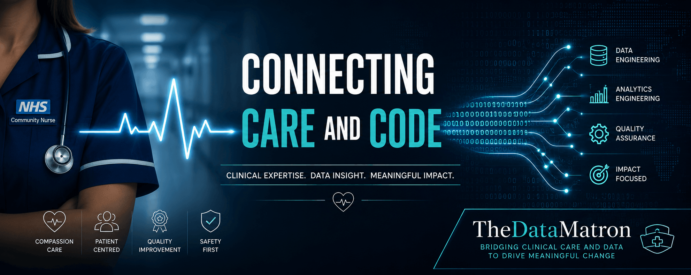
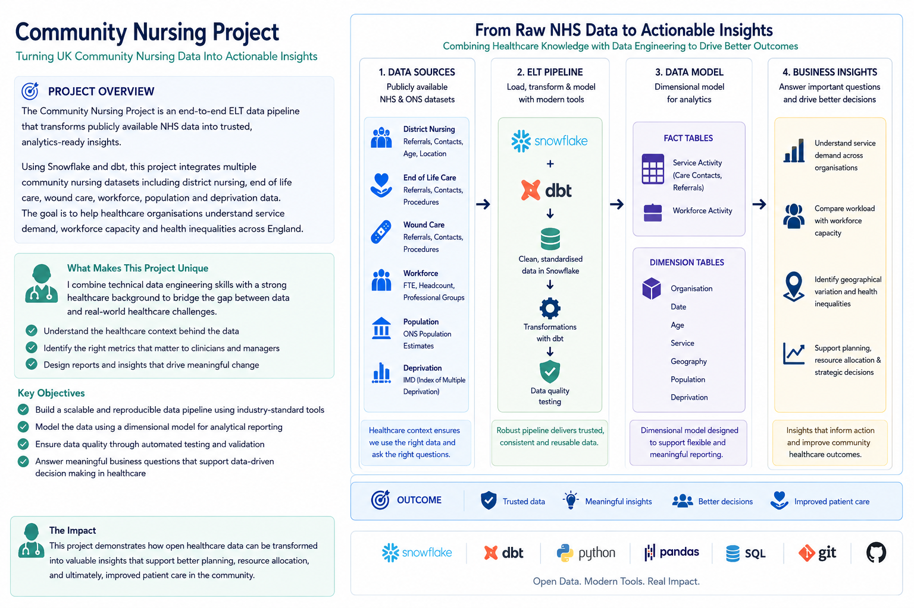

Community Nursing
Understanding healthcare begins with patient care.
Developed a deep understanding of patients, clinical care and pathways, multidisciplinary working and the realities of delivering frontline healthcare.

One consultant who understands both.
BSc • MSc • PGDip • PGCert
I help transform complex healthcare data into trusted, actionable insight by combining frontline clinical experience with modern analytics engineering.
From understanding patient pathways and service delivery to designing robust data solutions, I bridge the gap between healthcare expertise and technical implementation.
Book a Free ConsultationConnecting healthcare expertise with modern data engineering.


Healthcare data isn't just data.
Healthcare organisations generate vast amounts of data every day. Every patient interaction, referral, assessment, treatment and outcome creates another piece of information. The challenge isn't having data—it's understanding what to do with it.
The real value lies in understanding the entire data journey. How data is collected by clinicians, stored, transformed and connected by data engineers, determines whether it becomes a trusted source of insight or simply another disconnected dataset. When those connections are made effectively, patterns emerge, trends become visible and meaningful analysis becomes possible.
My background in frontline healthcare, clinical leadership, research and modern data engineering allows me to bridge that gap. I understand the clinical context behind the data as well as the technical processes required to prepare it for analysis. This means I can help organisations reduce complexity, make sense of their information and build data solutions that support confident, evidence-based decision making.
Healthcare Data
Understand the Data Journey
Connect the Data
Reveal the Insight
Support Better Decisions
Improve Outcomes
Every stage of my career has contributed to the way I approach healthcare data today.
Understanding healthcare begins with patient care.
Developed a deep understanding of patients, clinical care and pathways, multidisciplinary working and the realities of delivering frontline healthcare.
Leading teams and improving services.
Led a division of clinical teams and supported service performance and improvement through leadership, governance and operational management.
Turning evidence into knowledge.
Developed advanced research, evaluation and academic writing skills to support evidence-based decision making, and understanding impact and outcomes.
Measuring meaningful change.
Used data and evaluation to identify opportunities for improvement in healthcare delivery, processes, systems, and monitoring healthcare outcomes.
Building confidence through quality.
Supported governance, assurance and compliance through robust evaluation and quality monitoring.
Modern healthcare data engineering.
Designing modern data platforms using SQL, Python, Snowflake and dbt to create trusted analytical datasets.
Bringing everything together.
Combining clinical, healthcare, and academic experience with modern data engineering to help organisations understand complex health data and turn it into meaningful insight.
An example of how healthcare expertise and modern data engineering come together.

An end-to-end analytics engineering project built using publicly available NHS datasets to demonstrate modern healthcare data engineering techniques.
The project ingests, cleans, models and transforms community nursing data into trusted analytical datasets using a dimensional model and modern ELT principles.
If you're looking to speak with someone who understands both healthcare and modern data engineering—and can bridge the gap between them—I'd love to hear from you.
Or connect professionally